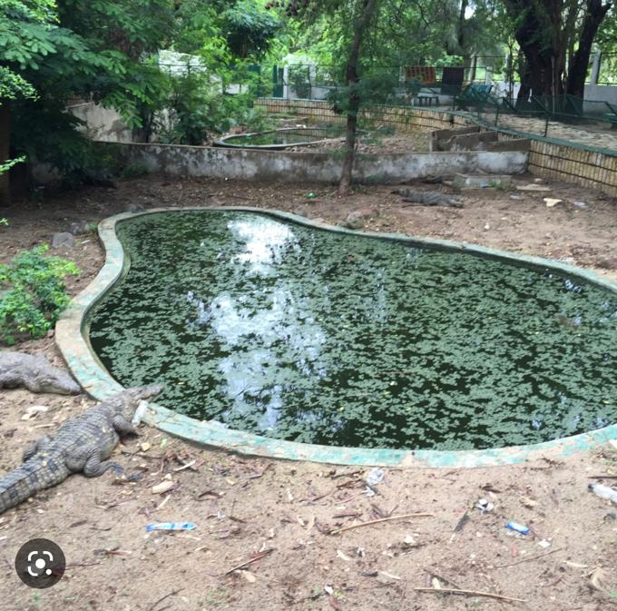

Le Parc forestier et zoologique de Hann est une réserve naturelle du Sénégal située à Dakar , sur la commune d’arrondissement de Hann Bel-Air. Le parc est créé en 1903 par le Gouverneur Martial Merlin. Il s’agit d’abord d’un jardin public ainsi que d’une pépinière, comme on en ouvrait alors en AOF. L’ensemble du parc s’étend sur 60 hectares environ. Il comprend la forêt classée et un zoo de facture classique. En 2002 on y dénombrait 134 pensionnaires, notamment des gazelles, des zébus, oryx, des hyènes, des phacochères, des singes, des lions, des crocodiles, ainsi que divers oiseaux, notamment des marabouts et des calaos.
